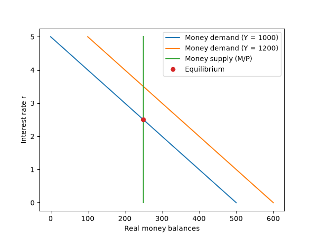
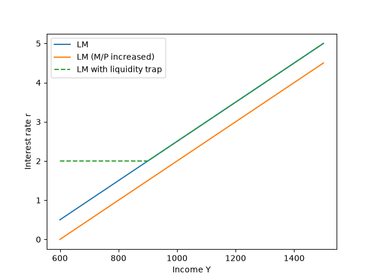
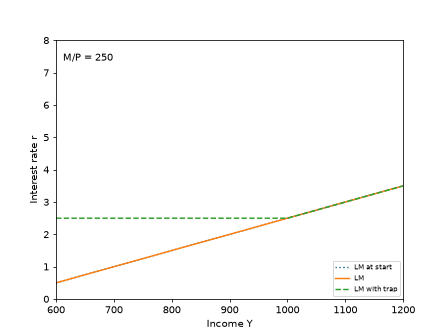

第 7 章: 貨幣需要と LM 曲線¶
7.1 この章の地図¶
前の章では、貨幣の供給を調べました。この章では、貨幣の需要を調べ、貨幣市場を均衡させる所得と利子率の組（LM 曲線）を導きます。人は、取引のために貨幣を持ち（所得が増えると、貨幣需要が増える）、資産の持ち方として貨幣を持ちます（利子率が下がると、貨幣需要が増える）。この 2 つから、貨幣需要は、所得の増加関数で、利子率の減少関数になります。LM 曲線の傾きとシフト、利子率が下限に達したときの流動性のわなを、テストで確かめます。

| 項目 | 内容 |
|---|---|
| 経済学の題材 | 取引需要・資産需要、貨幣市場の均衡、LM 曲線の傾きとシフト、流動性のわな、LM 曲線の上側と下側 |
| 使う Python の機能 | 関数、max、math.inf、テスト（pytest）。NumPy・pandas は、この章では使いません |
| 新しく導入するライブラリ | なし（Matplotlib は、第 1 章で導入済み） |
| 完成形 | money_demand、lm_interest、lm_income、lm_slope、transaction_demand、asset_demand、money_demand_shift、lm_shift、lm_interest_with_trap、trap_income、money_demand_with_trap、excess_money_demand、money_market_state |
| ファイル | 実装: lib/chapter07/money_market.py（中核）、lib/chapter07/liquidity.py、lib/chapter07/plot.py（図）／テスト: test/chapter07/test_money_market.py、test/chapter07/test_liquidity.py、test/chapter07/test_plot.py（自分で書くときは、practice/chapter07/ に、同じ名前で作ります） |
| データ | なし（手計算できる小さな例だけ） |
経済学の式とコードの対応¶
| 経済学 | 式 | コード |
|---|---|---|
| 貨幣需要 | L = k·Y − h·r | money_demand(income, interest, k, h) |
| 取引需要・資産需要 | 取引需要 = k·Y、資産需要 = −h·r | transaction_demand(income, k)、asset_demand(interest, h) |
| LM 曲線（利子率） | r = (k·Y − M/P) ÷ h | lm_interest(income, real_money, k, h) |
| LM 曲線（所得） | Y = (M/P + h·r) ÷ k | lm_income(interest, real_money, k, h) |
| LM 曲線の傾き | dr/dY = k ÷ h | lm_slope(k, h) |
| 貨幣需要曲線のシフト | k·ΔY | money_demand_shift(income_before, income_after, k) |
| LM 曲線のシフト | Δ(M/P) ÷ k | lm_shift(real_money_before, real_money_after, k) |
| 流動性のわな | r = max(LM 上の r, 下限) | lm_interest_with_trap(income, real_money, k, h, floor) |
| 貨幣の超過需要 | L − M/P | excess_money_demand(income, interest, real_money, k, h) |
前提とする既存の章¶
| できること | 場所 |
|---|---|
| 関数と pytest のテストを書く（Red → Green → Refactor）、Matplotlib で線を描く | 第 1 シリーズ 第 1〜7 章 |
IS-LM は、第 1 シリーズの第 13 章にも出てきます。この記事は、独立して読めます。この連載の第 4 章（45 度線）も、前提にしません。財市場の側（IS 曲線）は、第 8 章で導きます。
7.2 準備¶
サンプルコードは、リポジトリの apps/macro-basics-programming/python/ にあります。環境の作り方は、第 1 章 の 1.2 節と同じです。
cd apps/macro-basics-programming/python
uv sync
uv run pytest test/chapter07
39 passed
自分でコードを書くときは、practice/chapter07/ を作って、完成形と同じ名前のファイル（money_market.py・test_money_market.py など）に書きます。テストは、uv run pytest practice/chapter07 で動かします。完成形（lib/ と test/）は、答え合わせ用です。 自分で書き終えてから、開いてください。
7.3 予想する¶
貨幣需要が、L = 0.5 × Y − 100 × r（k = 0.5、h = 100）で、実質貨幣供給 M/P が 250 です。
- 所得 Y = 1000、利子率 r = 2.5 のときの貨幣需要は、いくつですか。貨幣市場を均衡させる利子率は、いくつですか。所得が 1200 に増えると、いくつになりますか
- 実質貨幣供給が 300 に増えると、Y = 1000 での均衡の利子率は、いくつになりますか。LM 曲線は、右と左のどちらにシフトしますか。同じ利子率で見て、所得は、いくつ動きますか
- LM 曲線の傾きは、いくつですか。h を 200 にすると、k を 1.0 にすると、それぞれ、いくつになりますか。緩やかになるのは、どちらですか
- 利子率に下限 2.0（流動性のわな）があります。Y = 600 のとき、LM 曲線上の利子率は、いくつですか。わなの下で、M/P を 250 から 270 に増やすと、Y = 600 での利子率は、どうなりますか
- 点（Y = 1000、r = 3.5）は、LM 曲線の上側ですか、下側ですか。貨幣は、供給超過ですか、需要超過ですか。利子率は、どちらに動きますか
7.4 貨幣需要と LM 曲線の考え方¶
貨幣需要¶
貨幣は、安全で流動的ですが、収益を生みません。持つ理由が、2 つあります。
| 需要 | 動機 | 決まり方 |
|---|---|---|
| 取引需要 | 買い物や支払いのために持つ | 所得の増加関数。所得が増えると、取引が増える |
| 資産需要 | 資産の持ち方として持つ | 利子率の減少関数。利子率が高いほど、貨幣を持つ損（収益を逃す）が大きい |
この 2 つを合わせた、簡単な形が、次の式です。
L = k·Y − h·r
k は、所得に対する感応度（所得 1 単位あたりの貨幣需要）、h は、利子率に対する感応度です。資産需要の部分（−h·r）は、利子率の減少関数であることだけが、ここでは大事で、水準そのものは意味を持ちません（定数項は、含めて考えません）。
貨幣市場の均衡と LM 曲線¶
貨幣供給（実質）M/P が与えられると、貨幣市場は、L = M/P のときに均衡します。これを、利子率について解いた式が、LM 曲線です。
r = (k·Y − M/P) ÷ h
所得 Y が増えると、貨幣需要が増えるので、均衡を保つには、利子率が上がる必要があります。LM 曲線は、右上がりです。貨幣供給は、利子率に依存しないので、貨幣市場の図（横軸が貨幣量）では垂直です。
傾きとシフト¶
所得を横軸、利子率を縦軸にとると、LM 曲線の傾きは、k ÷ h です。
| 変化 | 傾き | 理由 |
|---|---|---|
| h（利子率弾力性）が大きい | 緩やか | 利子率が少し動くだけで、貨幣需要が大きく変わる |
| k（所得弾力性）が大きい | 急 | 所得が増えると、貨幣需要が大きく増え、利子率を大きく上げる必要がある |
LM 曲線は、実質貨幣供給 M/P が増えると、右にシフトします。同じ利子率で、より大きい所得でも、貨幣市場が均衡するからです。所得が増えると、貨幣需要曲線（貨幣市場の図）が、右にシフトします。
流動性のわな¶
利子率が、ごく低い水準まで下がると、人は、債券を買っても、収益がほとんどなく、損失（価格の下落）のおそれだけが残ります。そのため、いくら貨幣が増えても、すべて、貨幣のまま持とうとします。貨幣需要が、無限大になり、貨幣需要曲線は、水平になります。この状態を、流動性のわなと呼びます。LM 曲線は、利子率の下限で、水平になります。
LM 曲線の上側と下側¶
LM 曲線の上側の点は、均衡より利子率が高く、貨幣需要が小さいので、貨幣が供給超過で、利子率が下がります。下側の点は、貨幣が需要超過で、利子率が上がります。
7.5 プログラミング¶
Red: 貨幣需要のテスト（中核）¶
最初のテストを書きます。k = 0.5、h = 100、Y = 1000、r = 2.5 なら、L = 500 − 250 = 250 です。所得の増加関数で、利子率の減少関数であることも、テストにします。
import pytest
from lib.chapter07.money_market import (
lm_income,
lm_interest,
lm_slope,
money_demand,
)
K = 0.5 # 所得に対する貨幣需要の感応度
H = 100.0 # 利子率に対する貨幣需要の感応度
def test_貨幣需要は所得の増加関数で利子率の減少関数() -> None:
assert money_demand(1000, 2.5, K, H) == pytest.approx(250)
assert money_demand(1200, 2.5, K, H) > money_demand(1000, 2.5, K, H)
assert money_demand(1000, 4.0, K, H) < money_demand(1000, 2.5, K, H)
money_demand がまだないので、テストは失敗します（Red）。
Green: 貨幣需要を実装する¶
def validate_k(k: float) -> None:
"""貨幣需要の所得への感応度 k が、正であることを確かめる。"""
validate_positive(k, "貨幣需要の所得への感応度 k は、正にする")
def validate_h(h: float) -> None:
"""貨幣需要の利子率への感応度 h が、正であることを確かめる。"""
validate_positive(h, "貨幣需要の利子率への感応度 h は、正にする")
def money_demand(income: float, interest: float, k: float, h: float) -> float:
"""貨幣需要 L = k·Y − h·r。所得の増加関数で、利子率の減少関数。"""
validate_k(k)
validate_h(h)
return k * income - h * interest
import と補助関数（写すときに足す）
記事の抜粋には、import と、先頭が _ の補助関数・定数を、省いています。完成形のファイルの先頭にある、次の部分を、写してください。
lib/chapter07/liquidity.py
import math
from lib.chapter07.money_market import (
lm_income,
lm_interest,
money_demand,
validate_h,
validate_k,
)
# 浮動小数点の誤差（下限が 0 のとき、0.1 + 0.2 − 0.3 は 5.6e-17 になる）を許す
_TOLERANCE = 1e-9
lib/chapter07/money_market.py
from lib.chapter01.validation import validate_positive
感応度 k・h が正でないとき（0 では、傾き k ÷ h や、利子率の式が、定義できません）は、どちらの値が悪いのか分かるエラーにします。
def test_感応度が正でなければエラー() -> None:
with pytest.raises(ValueError, match="所得への感応度"):
money_demand(1000, 2.5, 0.0, H)
with pytest.raises(ValueError, match="利子率への感応度"):
lm_interest(1000, 250, K, 0.0)
with pytest.raises(ValueError, match="利子率への感応度"):
lm_slope(K, -1.0)
LM 曲線¶
LM 曲線上の利子率は、貨幣需要を、貨幣供給に等しくする値です。この利子率で、貨幣需要を計算すると、M/P に戻ることを、テストにします。
def test_LM曲線上の利子率は貨幣市場を均衡させる() -> None:
assert lm_interest(1000, 250, K, H) == pytest.approx(2.5)
demand = money_demand(1000, lm_interest(1000, 250, K, H), K, H)
assert demand == pytest.approx(250)
def test_LM曲線は右上がりで所得が増えると利子率が上がる() -> None:
assert lm_interest(1200, 250, K, H) > lm_interest(1000, 250, K, H)
def test_所得から利子率を求める式と逆の関係() -> None:
interest = lm_interest(1000, 250, K, H)
assert lm_income(interest, 250, K, H) == pytest.approx(1000)
def lm_interest(income: float, real_money: float, k: float, h: float) -> float:
"""LM 曲線: 貨幣市場を均衡させる利子率 r = (k·Y − M/P) ÷ h。"""
validate_k(k)
validate_h(h)
return (k * income - real_money) / h
def lm_income(interest: float, real_money: float, k: float, h: float) -> float:
"""LM 曲線: 貨幣市場を均衡させる所得 Y = (M/P + h·r) ÷ k。"""
validate_k(k)
validate_h(h)
return (real_money + h * interest) / k
傾きとシフト¶
傾き k ÷ h は、所得を 1 増やしたときの、利子率の上昇に等しいはずです。これを、傾きの式と、LM 曲線の関数の、突き合わせでテストします。
def test_LM曲線の傾きは_k_を_h_で割った値() -> None:
assert lm_slope(K, H) == pytest.approx(0.005)
assert lm_slope(K, 200.0) < lm_slope(K, H)
def test_傾きは所得を1増やしたときの利子率の上昇に等しい() -> None:
rise = lm_interest(1001, 250, K, H) - lm_interest(1000, 250, K, H)
assert rise == pytest.approx(lm_slope(K, H))
k が大きいほど急になること、h を大きくすると傾きが 0 に近づく（水平に近づく）ことのテストも、test/chapter07/test_liquidity.py にあります。
def lm_slope(k: float, h: float) -> float:
"""LM 曲線の傾き dr/dY = k ÷ h（所得を横軸、利子率を縦軸にしたとき）。"""
validate_k(k)
validate_h(h)
return k / h
シフトは、2 つあります。実質貨幣供給が増えると、LM 曲線が右にシフトする幅は、Δ(M/P) ÷ k です。所得が増えると、貨幣需要曲線が右にシフトする幅は、k·ΔY です。
def test_実質貨幣供給が増えるとLM曲線は右にシフトする() -> None:
assert lm_income(2.5, 300, K, H) > lm_income(2.5, 250, K, H)
assert lm_interest(1000, 300, K, H) < lm_interest(1000, 250, K, H)
def test_マネーサプライが増えるとLM曲線は右にシフトする() -> None:
assert lm_shift(250, 300, K) == pytest.approx(100)
gap = lm_income(2.5, 300, K, H) - lm_income(2.5, 250, K, H)
assert gap == pytest.approx(lm_shift(250, 300, K))
def money_demand_shift(income_before: float, income_after: float, k: float) -> float:
"""所得の変化による、貨幣需要曲線の右へのシフト幅 k·ΔY（利子率を縦軸にとる）。"""
validate_k(k)
return k * (income_after - income_before)
def lm_shift(real_money_before: float, real_money_after: float, k: float) -> float:
"""実質貨幣供給の変化による、LM 曲線の右へのシフト幅 Δ(M/P) ÷ k。"""
validate_k(k)
return (real_money_after - real_money_before) / k
取引需要と資産需要¶
貨幣需要を、2 つに分けます。和が、貨幣需要に一致することを、テストにします。
def test_取引需要と資産需要の和は貨幣需要() -> None:
total = transaction_demand(1000, K) + asset_demand(2.5, H)
assert total == pytest.approx(money_demand(1000, 2.5, K, H))
def transaction_demand(income: float, k: float) -> float:
"""取引需要 k·Y。所得の増加関数。"""
validate_k(k)
return k * income
def asset_demand(interest: float, h: float) -> float:
"""資産需要 −h·r。利子率の減少関数（定数項は、シフトに含めて考えない）。"""
validate_h(h)
return -h * interest
流動性のわな¶
利子率に下限（例: 2.0）があると、LM 曲線は、下限で水平になります。通常の LM 曲線の利子率と、下限の、大きいほうが、わなのある LM 曲線の利子率です。Y = 600 では、通常は 0.5 ですが、下限の 2.0 になります。わなでは、貨幣供給を増やしても、利子率は下がりません。これも、テストにします。
FLOOR = 2.0 # 利子率の下限
def test_下限より低くなるはずの所得では利子率は下限で水平() -> None:
assert lm_interest(600, 250, K, H) == pytest.approx(0.5)
for income in (0, 600, 900):
assert lm_interest_with_trap(income, 250, K, H, FLOOR) == pytest.approx(2.0)
def test_わなでは貨幣供給を増やしても利子率は下がらない() -> None:
assert lm_interest_with_trap(600, 250, K, H, FLOOR) == pytest.approx(
lm_interest_with_trap(600, 270, K, H, FLOOR)
)
assert lm_interest_with_trap(1000, 300, K, H, FLOOR) < lm_interest_with_trap(
1000, 250, K, H, FLOOR
)
def lm_interest_with_trap(
income: float, real_money: float, k: float, h: float, floor: float
) -> float:
"""流動性のわなのある LM 曲線。利子率は、下限 floor を下回らない（水平になる）。"""
return max(lm_interest(income, real_money, k, h), floor)
def trap_income(real_money: float, k: float, h: float, floor: float) -> float:
"""LM 曲線が、下限 floor で水平になる、所得の上限。"""
return lm_income(floor, real_money, k, h)
貨幣需要の側では、利子率が下限のとき、貨幣需要は無限大です。下限を下回る利子率は、エラーにします。
def test_下限の利子率では貨幣需要は無限大() -> None:
assert math.isinf(money_demand_with_trap(1000, FLOOR, K, H, FLOOR))
assert money_demand_with_trap(1000, 2.5, K, H, FLOOR) == pytest.approx(250)
def test_利子率が下限を下回ればエラー() -> None:
with pytest.raises(ValueError, match="下限"):
money_demand_with_trap(1000, 1.0, K, H, FLOOR)
def money_demand_with_trap(
income: float, interest: float, k: float, h: float, floor: float
) -> float:
"""流動性のわなのある貨幣需要。利子率が下限なら、貨幣需要は無限大。"""
if math.isclose(interest, floor, abs_tol=_TOLERANCE):
return math.inf
if interest < floor:
raise ValueError("利子率は、下限を下回らない")
return money_demand(income, interest, k, h)
LM 曲線の上側と下側¶
貨幣の超過需要 L − M/P の符号で、点が、LM 曲線の上側か、下側かが分かります。
def test_LM曲線の上側は供給超過で下側は需要超過() -> None:
assert excess_money_demand(1000, 3.5, 250, K, H) == pytest.approx(-100)
assert excess_money_demand(1000, 1.5, 250, K, H) == pytest.approx(100)
def test_貨幣市場の状態の判定() -> None:
assert money_market_state(1000, 3.5, 250, K, H) == "供給超過（利子率が下がる）"
assert money_market_state(1000, 1.5, 250, K, H) == "需要超過（利子率が上がる）"
assert money_market_state(1000, 2.5, 250, K, H) == "均衡"
def excess_money_demand(
income: float, interest: float, real_money: float, k: float, h: float
) -> float:
"""貨幣の超過需要 L − M/P。正なら需要超過、負なら供給超過。"""
return money_demand(income, interest, k, h) - real_money
def money_market_state(
income: float, interest: float, real_money: float, k: float, h: float
) -> str:
"""点 (Y, r) が、LM 曲線の上側・下側・上のどれかを判定する。"""
excess = excess_money_demand(income, interest, real_money, k, h)
if math.isclose(excess, 0, abs_tol=1e-9):
return "均衡"
if excess < 0:
return "供給超過（利子率が下がる）"
return "需要超過（利子率が上がる）"
予想の答え合わせ¶
予想した答えを、プログラムで確かめます。
from lib.chapter07.liquidity import (
lm_interest_with_trap,
lm_shift,
money_market_state,
)
from lib.chapter07.money_market import lm_income, lm_interest, lm_slope, money_demand
k, h, real_money = 0.5, 100.0, 250.0
print("貨幣需要（Y = 1000, r = 2.5）:", money_demand(1000, 2.5, k, h))
print("均衡の利子率（Y = 1000）:", lm_interest(1000, real_money, k, h))
print("均衡の利子率（Y = 1200）:", lm_interest(1200, real_money, k, h))
print("M/P = 300 の利子率（Y = 1000）:", lm_interest(1000, 300, k, h))
print("LM のシフト幅:", lm_shift(250, 300, k))
print("同じ利子率 2.5 での所得:", lm_income(2.5, 250, k, h), "→", lm_income(2.5, 300, k, h))
print("傾き k/h:", lm_slope(k, h))
print("傾き（h = 200）:", lm_slope(k, 200.0))
print("傾き（k = 1.0）:", lm_slope(1.0, h))
print("通常の LM（Y = 600）:", lm_interest(600, real_money, k, h))
print("わなのある LM（Y = 600）:", lm_interest_with_trap(600, 250, k, h, 2.0))
print("わなで M/P = 270（Y = 600）:", lm_interest_with_trap(600, 270, k, h, 2.0))
print("点 (1000, 3.5):", money_market_state(1000, 3.5, real_money, k, h))
貨幣需要（Y = 1000, r = 2.5）: 250.0
均衡の利子率（Y = 1000）: 2.5
均衡の利子率（Y = 1200）: 3.5
M/P = 300 の利子率（Y = 1000）: 2.0
LM のシフト幅: 100.0
同じ利子率 2.5 での所得: 1000.0 → 1100.0
傾き k/h: 0.005
傾き（h = 200）: 0.0025
傾き（k = 1.0）: 0.01
通常の LM（Y = 600）: 0.5
わなのある LM（Y = 600）: 2.0
わなで M/P = 270（Y = 600）: 2.0
点 (1000, 3.5): 供給超過（利子率が下がる）
- 1 つ目の問い: 貨幣需要は 250 で、実質貨幣供給 250 と等しいので、貨幣市場は均衡し、均衡の利子率は 2.5 です。所得が 1200 に増えると、貨幣需要が増えるので、利子率が 3.5 に上がります（右上がり）
- 2 つ目の問い: M/P が 300 になると、Y = 1000 での利子率は 2.0 に下がります。LM 曲線は右にシフトし、同じ利子率 2.5 で、所得は 1000 から 1100 になります（シフト幅は 50 ÷ 0.5 = 100）
- 3 つ目の問い: 傾きは 0.005 です。h を 200 にすると 0.0025、k を 1.0 にすると 0.01 です。h が大きいほう（0.0025）が、緩やかで、k が大きいほうは、急になります
- 4 つ目の問い: 通常の LM 曲線では、Y = 600 の利子率は 0.5 ですが、下限があると 2.0 です。M/P を 270 に増やしても、利子率は、2.0 のままです。流動性のわなでは、貨幣供給を増やしても、利子率は下がりません
- 5 つ目の問い: 点（1000、3.5）は、LM 曲線（Y = 1000 で r = 2.5）の上側です。貨幣は供給超過で、利子率は、下がります
図¶
貨幣市場の図と、LM 曲線の図を、描く関数を、テストから書きます。貨幣需要の線は、右下がりで、所得が増えると右にシフトすることを、手計算の値と比べます。座標を取り出す補助関数（xs・ys）や、貨幣供給の垂直な線・均衡点のテストは、test/chapter07/test_plot.py を見てください。
描画のテストと実装（後回しにしても、学習は成り立ちます）
def test_貨幣需要曲線は右下がりで所得が増えると右にシフトする() -> None:
ax = money_market_axes()
assert xs(ax.lines[0]) == pytest.approx([500, 0])
assert ys(ax.lines[0]) == pytest.approx([0, 5])
assert xs(ax.lines[1]) == pytest.approx([600, 100])
描画のテストと実装（後回しにしても、学習は成り立ちます）
def plot_money_market(
income: float,
income_after: float,
real_money: float,
k: float,
h: float,
interest_max: float,
) -> Figure:
"""貨幣市場の均衡。貨幣供給は垂直、貨幣需要は右下がり（所得が増えると右へ）。"""
fig, ax = plt.subplots()
for y in (income, income_after):
demand = [money_demand(y, r, k, h) for r in (0, interest_max)]
ax.plot(demand, [0, interest_max], label=f"Money demand (Y = {y:g})")
ax.plot([real_money, real_money], [0, interest_max], label="Money supply (M/P)")
ax.plot(
[real_money], [lm_interest(income, real_money, k, h)], "o", label="Equilibrium"
)
ax.set_xlabel("Real money balances")
ax.set_ylabel("Interest rate r")
ax.legend()
plt.close(fig)
return fig
LM 曲線の図（plot_lm_curves）は、通常の LM 曲線、実質貨幣供給が増えたあとの LM 曲線、わなのある LM 曲線の、3 本を描きます。テストと実装は、test/chapter07/test_plot.py と lib/chapter07/plot.py を見てください。

ノートブックで試す¶
数字を書き換えて、結果と図が変わるのを、手軽に確かめられます。apps/macro-basics-programming/python/notebooks/ch07_money_demand_and_lm.ipynb を開き、「Parameters」のセルの数字（所得、実質貨幣供給、貨幣需要の感応度 k と h、利子率の下限）を書き換えて、上から順に実行します。起動は、アプリのディレクトリで uv run --with jupyterlab jupyter lab notebooks/ です。
動かして見る¶
実質貨幣供給 M/P を 250 から 400 へ増やします。LM 曲線が下へ動き、流動性のわなのある LM 曲線（破線）は、利子率の下限で、水平になります。

このアニメーションは、lib/animations/ の関数で作っています（uv run python -m tools.render_animations で、GIF を書き出します）。写経は、不要です。動きを見て、式と図の対応を、確かめてください。
実行結果¶
uv run pytest test/chapter07
39 passed
7.6 規則で言うと¶
- 貨幣需要は、所得の増加関数で、利子率の減少関数。 L = k·Y − h·r。貨幣市場は、L = M/P で均衡する
- LM 曲線は、右上がり。 傾き k ÷ h。h が大きいと緩やか、k が大きいと急。M/P が増えると、右にシフトする
- 流動性のわなでは、LM 曲線が水平になる。 下限の利子率では、貨幣供給を増やしても、利子率は下がらない
- LM 曲線の上側は、貨幣の供給超過（利子率が下がる）、下側は、需要超過（利子率が上がる）。
混同しやすい点を、表にまとめます。
| 混同しやすい点 | 違い |
|---|---|
| 貨幣需要曲線のシフトと LM 曲線のシフト | 所得が増える → 貨幣需要曲線が右（貨幣市場の図、縦軸が利子率、横軸が貨幣量）。M/P が増える → LM 曲線が右（横軸が所得）。図の軸が違う |
| h と k | h（利子率への感応度）が大きいと LM は緩やか。k（所得への感応度）が大きいと LM は急。傾きは k ÷ h |
| LM 曲線の上側と下側 | 上側は、貨幣の供給超過（利子率が下がる）。下側は、需要超過（利子率が上がる） |
| 流動性のわなと貨幣供給 | わなでは、貨幣供給を増やしても、利子率は下がらない（LM の水平な部分で、M/P の増加は、効かない） |
このモデルが成り立たない場面¶
- 貨幣需要は、線形とは限りません。 L = k·Y − h·r は、近似です。実際の貨幣需要は、k と h が一定ではありません
- LM 曲線は、物価 P を、一定と見ています。 P が動くと、実質貨幣供給 M/P が動いて、LM 曲線がシフトします（第 10 章の AD-AS 分析）
- 貨幣供給は、利子率に依存しないと仮定しています。 実際は、利子率が上がると、銀行が貸出を増やして、貨幣供給が増えることがあります（前の章の貨幣乗数は、一定の前提でした）
- 流動性のわなの下限は、観測しにくい値です。 下限は、0 近くとされますが、いくつなのかは、はっきり決まりません。この章の 2.0 は、図を見やすくするための値です
7.7 練習問題¶
| 種類 | 問題 |
|---|---|
| 想起 | 本文を閉じて、lm_interest の最初のテスト（k = 0.5、h = 100、M/P = 250、Y = 1000 で、利子率 2.5）を書いてください |
| 生成 | 解説を見る前に、同じ利子率で、所得が income のときに、貨幣市場が需要超過か供給超過かを、真偽値で返す is_demand_excess(income, interest, real_money, k, h) を、テストから書いてください。点（Y = 1000、r = 1.5）では、どうなりますか |
| 多様 | h を 100 から 200 に変えると、同じ所得 1200 での、LM 曲線上の利子率は、いくつになりますか。先に予想してから、確かめてください（M/P = 250） |
| 交互 | 第 1 シリーズの第 3 章のリスト内包表記で、所得が 600、800、1000、1200、1400 のときの、わなのある LM 曲線（下限 2.0）の利子率を、一度に計算してください。わなの端の所得は、いくつですか |
解答（先に自分で取り組んでから、開いてください）
想起:
def test_LM曲線上の利子率は貨幣市場を均衡させる_最初のテスト() -> None:
assert lm_interest(1000, 250, 0.5, 100.0) == pytest.approx(2.5)
生成: 貨幣の超過需要が正なら、需要超過です。
def is_demand_excess(income, interest, real_money, k, h):
return excess_money_demand(income, interest, real_money, k, h) > 0
def test_LMの下側は需要超過で上側はそうでない() -> None:
assert is_demand_excess(1000, 1.5, 250, 0.5, 100.0)
assert not is_demand_excess(1000, 3.5, 250, 0.5, 100.0)
assert not is_demand_excess(1000, 2.5, 250, 0.5, 100.0)
点（Y = 1000、r = 1.5）は、LM 曲線（r = 2.5）の下側で、貨幣は需要超過（利子率は上がる）です。均衡の上（r = 2.5）は、需要超過ではありません（0 は、正ではない）。
多様: h = 200 なら、r = (0.5 × 1200 − 250) ÷ 200 = 1.75 です。h = 100 のときは 3.5 でした。h が大きいと、同じ所得の増加で、利子率の上昇が小さい（LM が緩やか）ことの、数値での確認です。
def test_hが大きいと同じ所得でも利子率は低い() -> None:
assert lm_interest(1200, 250, 0.5, 100.0) == pytest.approx(3.5)
assert lm_interest(1200, 250, 0.5, 200.0) == pytest.approx(1.75)
交互:
def test_わなのあるLM曲線は下限で水平になってから上がる() -> None:
incomes = [600, 800, 1000, 1200, 1400]
rates = [lm_interest_with_trap(y, 250, 0.5, 100.0, 2.0) for y in incomes]
assert rates == pytest.approx([2.0, 2.0, 2.5, 3.5, 4.5])
assert trap_income(250, 0.5, 100.0, 2.0) == pytest.approx(900)
利子率は、2.0、2.0、2.5、3.5、4.5 です。わなの端の所得は 900 で、それ以下では水平です（800 と 600 が、同じ 2.0）。
7.8 振り返り¶
- 取引需要と資産需要は、それぞれ、何の関数ですか。貨幣需要曲線が右にシフトするのは、どんなときですか
- LM 曲線の傾きが k ÷ h であることを、「所得を 1 増やしたときの利子率の上昇」という言葉で、説明できますか
- 流動性のわなで、貨幣供給を増やしても利子率が下がらないのは、なぜですか。第 9 章で、金融政策は、どうなりますか（予想してみてください）
7.9 まとめ¶
- 貨幣需要 L = k·Y − h·r を、取引需要（k·Y）と資産需要（−h·r）に分けた。k = 0.5、h = 100、Y = 1000、r = 2.5 で、L = 250（M/P と等しく、貨幣市場は均衡）
- LM 曲線 r = (k·Y − M/P) ÷ h は、右上がりで、傾きは k ÷ h = 0.005。h が大きいと緩やかで、k が大きいと急。M/P が 250 から 300 に増えると、右に 100 シフトする
- 利子率に下限があると、LM 曲線は、下限（2.0）で水平になる（流動性のわな）。わなでは、貨幣供給を増やしても利子率は下がらない
- LM 曲線の上側は貨幣の供給超過（利子率が下がる）、下側は需要超過（利子率が上がる）
- 次の章では、財市場の均衡（IS 曲線）を導き、IS 曲線と LM 曲線の交点で、均衡の所得と利子率を求めます